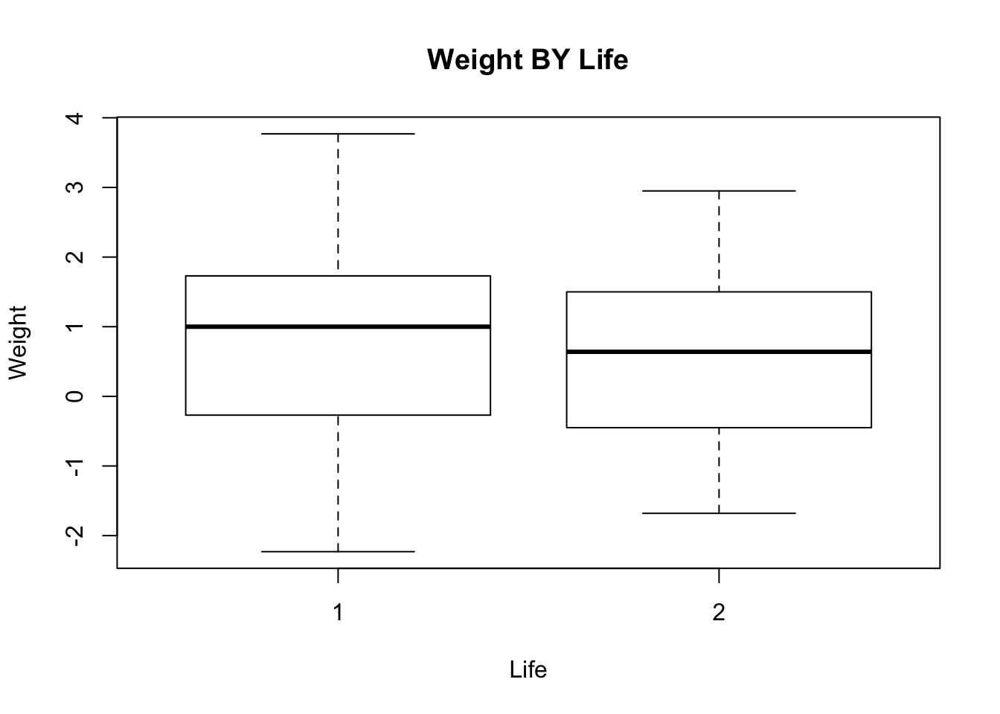

2 Getting acquainted with R
In this exercise we will use R to read a dataset and produce some descriptive statistics, produce some charts, and perform some simple statistical inference. The aim of the exercise is for you to become familiar with R and some basic R functions and objects.
The first thing we will do, after starting R, is issue a command to retrieve an example dataset:
fem <- read.table("fem.dat", header = TRUE)This command illustrates some key things about the way R works.
We are instructing R to assign (using the <- operator) the output of the read.table() function to an object
called fem.
The fem object will contain the data held in the file fem.dat as an R data.frame object:
class(fem)## [1] "data.frame"You can inspect the contents of the fem data.frame (or any other R object) just by typing its name:
fem## ID AGE IQ ANX DEP SLP SEX LIFE WT
## 1 1 39 94 2 2 2 1 1 2.23
## 2 2 41 89 2 2 2 1 1 1.00
## 3 3 42 83 3 3 2 1 1 1.82
## 4 4 30 99 2 2 2 1 1 -1.18
## 5 5 35 94 2 1 1 1 2 -0.14
## 6 6 44 90 NA 1 2 2 2 0.41Note that the fem object is built from other objects. These are the named vectors (columns) in the dataset:
names(fem)## [1] "ID" "AGE" "IQ" "ANX" "DEP" "SLP" "SEX" "LIFE" "WT"The [1] displayed before the column names refers to the numbered position of the first name in the output. These positions are known as indexes and can be used to refer to individual items. For example:
names(fem)[1]## [1] "ID"names(fem)[8]## [1] "LIFE"names(fem)[2:4]## [1] "AGE" "IQ" "ANX"The data consist of 118 records:
nrow(fem)## [1] 118each with nine variables:
ncol(fem)## [1] 9for female psychiatric patients.
The columns in the dataset are:
| ID | Patient ID |
|---|---|
| AGE | Age in years |
| IQ | IQ score |
| ANX | Anxiety (1=none, 2=mild, 3=moderate, 4=severe) |
| DEP | Depression (1=none, 2=mild, 3=moderate or severe) |
| SLP | Sleeping normally (1=yes, 2=no) |
| SEX | Lost interest in sex (1=yes, 2=no) |
| LIFE | Considered suicide (1=yes, 2=no) |
| WT | Weight change (kg) in previous 6 months |
The first ten records of the fem data.frame are:
## ID AGE IQ ANX DEP SLP SEX LIFE WT
## 1 1 39 94 2 2 2 1 1 2.23
## 2 2 41 89 2 2 2 1 1 1.00
## 3 3 42 83 3 3 2 1 1 1.82
## 4 4 30 99 2 2 2 1 1 -1.18
## 5 5 35 94 2 1 1 1 2 -0.14
## 6 6 44 90 NA 1 2 2 2 0.41
## 7 7 31 94 2 2 NA 1 1 -0.68
## 8 8 39 87 3 2 2 1 2 1.59
## 9 9 35 -99 3 2 2 1 1 -0.55
## 10 10 33 92 2 2 2 1 1 0.36You may check this by asking R to display all columns of the first ten records in the fem data.frame:
fem[1:10, ]## ID AGE IQ ANX DEP SLP SEX LIFE WT
## 1 1 39 94 2 2 2 1 1 2.23
## 2 2 41 89 2 2 2 1 1 1.00
## 3 3 42 83 3 3 2 1 1 1.82
## 4 4 30 99 2 2 2 1 1 -1.18
## 5 5 35 94 2 1 1 1 2 -0.14
## 6 6 44 90 NA 1 2 2 2 0.41
## 7 7 31 94 2 2 NA 1 1 -0.68
## 8 8 39 87 3 2 2 1 2 1.59
## 9 9 35 -99 3 2 2 1 1 -0.55
## 10 10 33 92 2 2 2 1 1 0.36The space after the comma is optional. You can think of it as a placeholder for where you would specify the indexes for columns you wanted to display. For example:
fem[1:10,2:4]displays the first ten rows and the second, third and fourth columns of the fem data.frame:
## AGE IQ ANX
## 1 39 94 2
## 2 41 89 2
## 3 42 83 3
## 4 30 99 2
## 5 35 94 2
## 6 44 90 NA
## 7 31 94 2
## 8 39 87 3
## 9 35 -99 3
## 10 33 92 2NA is a special value meaning not available or missing.
You can access the contents of a single column by name:
fem$IQ## [1] 94 89 83 99 94 90 94 87 -99 92 92 94 91 86 90 -99 91
## [18] 82 86 88 97 96 95 87 103 -99 91 87 91 89 92 84 94 92
## [35] 96 96 86 92 102 82 92 90 92 88 98 93 90 91 -99 92 92
## [52] 91 91 86 95 91 96 100 99 89 89 98 98 103 91 91 94 91
## [69] 85 92 96 90 87 95 95 87 95 88 94 -99 -99 87 92 86 93
## [86] 92 106 93 95 95 92 98 92 88 85 92 84 92 91 86 92 89
## [103] -99 96 97 92 92 98 91 91 89 94 90 96 87 86 89 -99fem$IQ[1:10]## [1] 94 89 83 99 94 90 94 87 -99 92The $ sign is used to separate the name of the data.frame and the name of the column of interest. Note that R is case-sensitive so that IQ and iq are not the same.
You can also access rows, columns, and individual cells by specifying row and column positions. For example, the IQ column is the third column in the fem data.frame:
fem[ ,3]## [1] 94 89 83 99 94 90 94 87 -99 92 92 94 91 86 90 -99 91
## [18] 82 86 88 97 96 95 87 103 -99 91 87 91 89 92 84 94 92
## [35] 96 96 86 92 102 82 92 90 92 88 98 93 90 91 -99 92 92
## [52] 91 91 86 95 91 96 100 99 89 89 98 98 103 91 91 94 91
## [69] 85 92 96 90 87 95 95 87 95 88 94 -99 -99 87 92 86 93
## [86] 92 106 93 95 95 92 98 92 88 85 92 84 92 91 86 92 89
## [103] -99 96 97 92 92 98 91 91 89 94 90 96 87 86 89 -99fem[9, ]## ID AGE IQ ANX DEP SLP SEX LIFE WT
## 9 9 35 -99 3 2 2 1 1 -0.55fem[9,3]## [1] -99There are missing values in the IQ column which are all coded as -99. Before proceeding we must set these to
the special NA value:
fem$IQ[fem$IQ == -99] <- NAThe term inside the square brackets is also an index. This type of index is used to refer to subsets of data held in an object that meet a particular condition. In this case we are instructing R to set the contents of the IQ variable to NA if the contents of the IQ variable is -99.
Check that this has worked:
fem$IQ## [1] 94 89 83 99 94 90 94 87 NA 92 92 94 91 86 90 NA 91
## [18] 82 86 88 97 96 95 87 103 NA 91 87 91 89 92 84 94 92
## [35] 96 96 86 92 102 82 92 90 92 88 98 93 90 91 NA 92 92
## [52] 91 91 86 95 91 96 100 99 89 89 98 98 103 91 91 94 91
## [69] 85 92 96 90 87 95 95 87 95 88 94 NA NA 87 92 86 93
## [86] 92 106 93 95 95 92 98 92 88 85 92 84 92 91 86 92 89
## [103] NA 96 97 92 92 98 91 91 89 94 90 96 87 86 89 NAWe can now compare the groups who have and have not considered suicide. For example:
by(fem$IQ, fem$LIFE, summary)Look at the help for the by() function:
help(by)Note that you may use ?by as a shortcut for help(by).
The by() function applies another function (in this case the summary() function) to a column in a
data.frame (in this case fem$IQ) split by the value of another variable (in this case fem$LIFE).
It can be tedious to always have to specify a data.frame each time we want to use a particular variable. We can fix this problem by ‘attaching’ the data.frame:
attach(fem)We can now refer to the columns in the fem data.frame without having to specify the name of the data.frame. This time we will produce summary statistics for WT by LIFE:
by(WT, LIFE, summary)## LIFE: 1
## Min. 1st Qu. Median Mean 3rd Qu. Max. NA's
## -2.2300 -0.2700 1.0000 0.7867 1.7300 3.7700 4
## --------------------------------------------------------
## LIFE: 2
## Min. 1st Qu. Median Mean 3rd Qu. Max. NA's
## -1.6800 -0.4500 0.6400 0.6404 1.5000 2.9500 7We can view the same data as a box and whisker plot:
boxplot(WT ~ LIFE)
We can add axis labels and a title to the graph:
boxplot(WT ~ LIFE,
xlab = "Life",
ylab = "Weight",
main = "Weight BY Life")
A more descriptive title might be “Weight Change BY Considered Suicide”.
The groups do not seem to differ much in their medians and the distributions appear to be reasonably symmetrical about their medians with a similar spread of values.
We can look at the distribution as histograms:
hist(WT[LIFE == 1])
hist(WT[LIFE == 2])
and check the assumption of normality using quantile-quantile plots:
qqnorm(WT[LIFE == 1])
qqline(WT[LIFE == 1])qqnorm(WT[LIFE == 2])
qqline(WT[LIFE == 2])
or by using a formal test:
shapiro.test(WT[LIFE == 1])##
## Shapiro-Wilk normality test
##
## data: WT[LIFE == 1]
## W = 0.98038, p-value = 0.4336shapiro.test(WT[LIFE == 2])##
## Shapiro-Wilk normality test
##
## data: WT[LIFE == 2]
## W = 0.97155, p-value = 0.3292Remember that we can use the by() function to apply a function to a data.frame, including statistical functions such as shapiro.test():
by(WT, LIFE, shapiro.test)## LIFE: 1
##
## Shapiro-Wilk normality test
##
## data: dd[x, ]
## W = 0.98038, p-value = 0.4336
##
## --------------------------------------------------------
## LIFE: 2
##
## Shapiro-Wilk normality test
##
## data: dd[x, ]
## W = 0.97155, p-value = 0.3292We can also test whether the variances differ significantly using Bartlett’s test for the homogeneity of variances:
bartlett.test(WT, LIFE)##
## Bartlett test of homogeneity of variances
##
## data: WT and LIFE
## Bartlett's K-squared = 0.32408, df = 1, p-value = 0.5692There is no significant difference between the two variances.
Many functions in R have a formula interface that may be used to specify multiple variables and the relations between multiple variables. We could have used the formula interface with the bartlett.test() function:
bartlett.test(WT ~ LIFE)##
## Bartlett test of homogeneity of variances
##
## data: WT by LIFE
## Bartlett's K-squared = 0.32408, df = 1, p-value = 0.5692Having checked the normality and homogeneity of variance assumptions we can proceed to carry out a t-test:
t.test(WT ~ LIFE, var.equal = TRUE)##
## Two Sample t-test
##
## data: WT by LIFE
## t = 0.59869, df = 104, p-value = 0.5507
## alternative hypothesis: true difference in means is not equal to 0
## 95 percent confidence interval:
## -0.3382365 0.6307902
## sample estimates:
## mean in group 1 mean in group 2
## 0.7867213 0.6404444There is no evidence that the two groups differ in weight change in the previous six months.
We could still have performed a t-test if the variances were not homogenous by setting the var.equal parameter of the t.test() function to FALSE:
t.test(WT ~ LIFE, var.equal = FALSE)##
## Welch Two Sample t-test
##
## data: WT by LIFE
## t = 0.60608, df = 98.866, p-value = 0.5459
## alternative hypothesis: true difference in means is not equal to 0
## 95 percent confidence interval:
## -0.3326225 0.6251763
## sample estimates:
## mean in group 1 mean in group 2
## 0.7867213 0.6404444or performed a non-parametric test:
wilcox.test(WT ~ LIFE)##
## Wilcoxon rank sum test with continuity correction
##
## data: WT by LIFE
## W = 1488, p-value = 0.4622
## alternative hypothesis: true location shift is not equal to 0An alternative, and more general, non-parametric test is:
kruskal.test(WT ~ LIFE)##
## Kruskal-Wallis rank sum test
##
## data: WT by LIFE
## Kruskal-Wallis chi-squared = 0.54521, df = 1, p-value = 0.4603